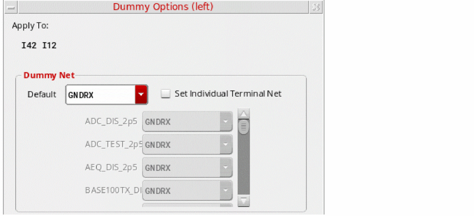
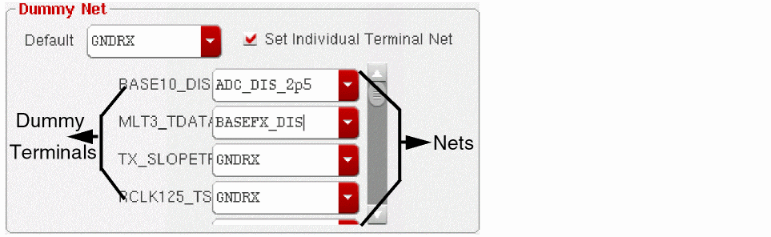
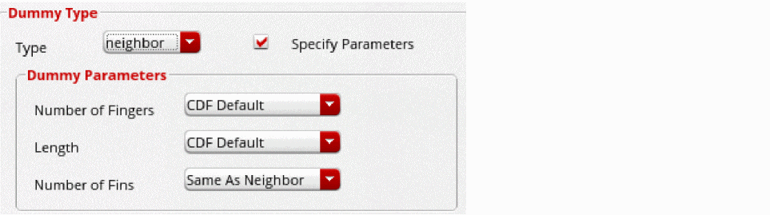
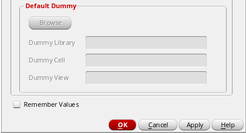

Adding and Deleting Dummies in the Modgen Editor
To create dummy devices, with the Modgen Editor open:
- Select one or more Modgen instances.
-
Click the arrow next to the Add Dummy
 button on the toolbar.
button on the toolbar.
Alternatively, if the Modgen editor is not open, use the Modgen on-canvas command Place—Modgen and select the required location option. -
Choose a dummy location.
If no Modgen instance is selected, depending on the specified location option, either a dummy row or a dummy column is added to the array of instances. For example, selecting Add Dummy Left adds a column to the left of the array, and selecting Add Dummy Bottom adds a row of dummies at the bottom.
The Dummy Options form appears.
 - Apply To lists the selected Modgen instances. This is not editable.
- In the Dummy Net section, specify the nets to which you want the dummy terminals attached.
-
To connect individual dummy terminals to different nets, select Set Individual Terminal Net.
A list of dummy terminals that are available in the current design is displayed. Use the list box beside each dummy terminal name to specify the net to which it needs to be connected.
 -
In the Dummy Type section, select a dummy type from the Type list.
 - Select Specify Parameters to edit the default dummy parameters.
- In the Dummy Parameters section, the required value in the Number of Fingers field.
-
From the Length field, choose the required dummy length setting.
Scale factors can be used to specify the length; for example .1u. - From the Number of Fins field, choose the required value.
-
If you chose the Dummy Type as default, click Browse under Default Dummy to browse for the library, cell, and view you want for the dummy devices.
 -
Select Remember Values to save the values of all dummy devices.
These values are saved on a per-user basis. So the Module Generator will always load these values until you overwrite them with new saved values. - Click OK or Apply.
(Virtuoso Advanced Node for Layout Only) For FinFET devices to support operations such as dummy creation, their component class must be set to NFIN or PFIN. To define these component types and assign devices to them, use either the Configure Physical Hierarchy command or the library and attributes mapping (LAM) file.
In addition, the Number of Fins parameter must be included in the value of the transistorWidthParamNames environment variable:
envSetVal("layoutXL" "transistorWidthParamNames" 'string "nfin nFin w wr")
Related Topics
Adding Dummy Device Rows or Columns
Methods to Delete Dummy Devices, Dummy Rows, and Dummy Columns
Return to top